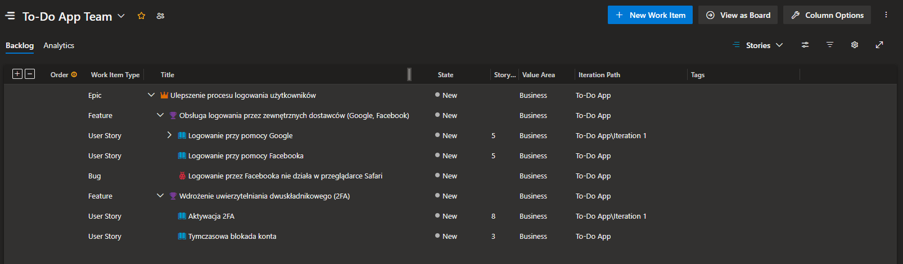

Organizacja pracy w projekcie
Backlog
Czym jest backlog?
Backlog to lista wszystkich funkcjonalności, zadań i usprawnień, które mają zostać wykonane w projekcie.
W Azure DevOps backlog to po prostu zbiór Work Items (Epic, Feature, User Story, Task), które opisują wymagania i prace do wykonania w projekcie.
Backlog można podzielić na dwa poziomy:
- Product Backlog – wszystkie wymagania dla całego produktu (długoterminowe).
- Sprint Backlog – zestaw zadań wybranych do realizacji w jednym sprincie (krótkoterminowe).
Po co jest backlog?
- Organizacja pracy
- Priorytetyzacja
- Śledzenie postępu
- Komunikacja w zespole
- Elastyczność
Backlog na podstawie Azure DevOps
Lista elementów z polami:
- Typ (Epis, Feature, User story, Task)
- Tytuł
- Opis
- Kryteria akceptacji
- Status
- Priorytet
- Estymacja czasu (tzw. Story Points)
- Osoba odpowiedzialna
- Linki do innych elementów backlogu
- Linki do gałęzi (branch) w repozytorium
- Komentarze/dyskusja
Typy elementów w backlogu
-
Epic (Epik)
Największy poziom abstrakcji, reprezentuje szeroki obszar funkcjonalny lub cel biznesowy.
Przykład:
üìå Tytu≈Ç: Ulepszenie bezpiecze≈Ñstwa aplikacji
üìå Opis: W celu zwiększenia ochrony danych u≈ºytkownik√≥w i zgodności z RODO dodajemy szyfrowanie hase≈Ç oraz logowanie dwusk≈Çadnikowe.
üìå Kryteria akceptacji:
✅ Hasła przechowywane w formie zaszyfrowanej
✅ Obsługa uwierzytelniania dwuetapowego
✅ Możliwość zmiany hasła przez użytkownika
-
Feature (Funkcja)
Średni poziom abstrakcji. Feature reprezentuje większą funkcjonalność w ramach Epic i składa się z User Stories.
Przykład:
üìå Tytu≈Ç: Obs≈Çuga dwusk≈Çadnikowego uwierzytelniania
üìå Opis: Aby zwiększyƒá bezpiecze≈Ñstwo u≈ºytkownik√≥w, dodajemy mo≈ºliwo≈õƒá aktywacji logowania dwuetapowego przy u≈ºyciu kod√≥w SMS lub aplikacji Authenticator.
üìå Kryteria akceptacji:
✅ Użytkownik może włączyć dwuskładnikowe uwierzytelnianie w ustawieniach
✅ Kod weryfikacyjny jest wysyłany na telefon lub generowany przez aplikację
✅ Po trzech błędnych próbach logowania konto jest blokowane
-
User Story (Historia użytkownika)
Reprezentuje konkretne wymaganie użytkownika – jest to najmniejsza jednostka backlogu zawierająca pojedynczą funkcjonalność. Powinna być na tyle mała, aby mogła zostać ukończona w jednym sprincie. Często jej format to: Jako [ktoś] chcę [coś], aby [coś].
Przykład:
üìå Tytu≈Ç: Jako u≈ºytkownik chcę w≈ǃÖczyƒá logowanie dwuetapowe, aby zwiększyƒá bezpiecze≈Ñstwo mojego konta
üìå Opis: Po aktywacji u≈ºytkownik musi potwierdziƒá to≈ºsamo≈õƒá przy logowaniu, wpisujƒÖc kod SMS lub z aplikacji Authenticator.
üìå Kryteria akceptacji:
✅ W ustawieniach dostępna jest opcja „Włącz dwuskładnikowe uwierzytelnianie”
✅ Po aktywacji użytkownik musi wybrać metodę: SMS lub Authenticator
✅ Przy każdym logowaniu użytkownik musi podać kod
-
Task (Zadanie)
Reprezentuje konkretną pracę do wykonania w ramach User Story. Może to być kodowanie, testowanie, projektowanie UI itp.
Przykład:
üìå Tytu≈Ç: Zaimplementowaƒá mechanizm wysy≈Çania kod√≥w SMS
üìå Opis: Utworzyƒá API do wysy≈Çki kod√≥w na telefon u≈ºytkownika przy logowaniu. Skorzystaƒá z zewnętrznego dostawcy us≈Çug SMS.
üìå Status: W toku
üìå Przypisany do: Jan Kowalski
Przykładowy backlog
Proces w Azure DevOps: Agile

Jak pisać dobre User Story?
Zasada INVEST to świetna praktyka, która pomaga w tworzeniu dobrych User Stories w backlogu.
-
I – Independent (Niezależna)
-
Historia użytkownika powinna być możliwie samodzielna, aby można było ją realizować bez zależności od innych zadań.
-
Jeśli jedna User Story blokuje inną, może to powodować opóźnienia w realizacji sprintu.
-
❌ Złe: „Użytkownik może zresetować hasło” (jeśli logowanie nie jest gotowe, nie można tego wdrożyć).
-
✅ Dobre: „Użytkownik może otrzymać e-mail z linkiem do resetu hasła” (to można wdrożyć osobno).
-
-
N – Negotiable (Negocjowalna)
- User Story nie jest sztywną specyfikacją, ale punktem do rozmów między zespołem a Product Ownerem.
Szczegóły mogą się zmieniać w trakcie planowania.
- ✅ Dobre: „Użytkownik powinien widzieć listę swoich zadań” – sposób realizacji (np. jako tabela czy lista kart) może być ustalony później.
-
V – Valuable (Wartościowa)
-
Każda historia powinna przynosić wartość dla użytkownika lub klienta.
-
Jeśli User Story nie daje wartości, nie powinna znaleźć się w backlogu.
-
❌ Złe: „Zmienimy kolor przycisku na niebieski” – jeśli to nie wpływa na UX, nie ma wartości.
-
✅ Dobre: „Użytkownik może filtrować swoje zadania po statusie” – daje realną wartość.
-
-
E – Estimable (Estymowalna)
-
Powinna być na tyle szczegółowa, aby dało się oszacować czas pracy.
-
Jeśli nie można jej oszacować, to prawdopodobnie jest za duża i trzeba ją podzielić na mniejsze części.
-
❌ Złe: „Dodanie nowego systemu raportowania” – zbyt szerokie, trudne do oszacowania.
-
✅ Dobre: „Użytkownik może wygenerować raport PDF z zadaniami” – konkretny zakres.
-
-
S – Small (Mała)
- Powinna być na tyle mała, żeby można było ją ukończyć w jednym sprincie (najlepiej w ciągu 1-3 dni).
Jeśli historia jest zbyt duża, podziel ją na mniejsze User Stories.
-
❌ Złe: „Jako użytkownik chcę pełną personalizację ustawień aplikacji” – za duże.
-
✅ Dobre: „Jako użytkownik chcę zmienić język aplikacji w ustawieniach” – małe i konkretne.
-
T – Testable (Testowalna)
- Powinna mieć jasne kryteria akceptacji, które pozwalają sprawdzić, czy działa poprawnie.
Jeśli nie można przetestować historii, to jest źle sformułowana.
-
❌ Złe: „Użytkownik powinien mieć lepsze doświadczenie logowania” – niejasne, nie da się przetestować.
-
✅ Dobre: „Po trzech błędnych próbach logowania użytkownik widzi komunikat o blokadzie” – można sprawdzić.
Przykład dobrej User Story z INVEST
Tytuł: Jako użytkownik chcę otrzymywać e-mail z linkiem do resetu hasła, aby móc odzyskać dostęp do konta.
✅ Independent (Niezależna) – Można wdrożyć reset hasła osobno, bez czekania na inne funkcje.
✅ Negotiable (Negocjowalna) – Możemy negocjować szczegóły implementacji, np. sposób generowania linku do resetu hasła (czas trwania ważności linku, liczba prób, itp.).
✅ Valuable (Wartościowa) – Użytkownik nie straci konta, jeśli zapomni hasła.
✅ Estimable (Estymowalna) – Możemy oszacować pracę (np. 3 dni).
✅ Small (Mała) – Jest to jedno konkretne zadanie.
✅ Testable (Testowalna) – Możemy sprawdzić, czy e-mail faktycznie przychodzi.